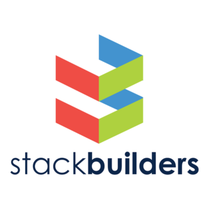

Why Haskell?
Model complex domains
Express domain rules, invariants, and possible states directly in code instead of scattering them through comments, docs, and informal practices.
Build reliable software
Catch mistakes before they escape into production and build systems that stay dependable as the logic gets more complex and the stakes get higher.
Refactor with confidence
Keep your codebase maintainable, even as requirements shift, teams change, and environments evolve. .
With Haskell, you are in control. Choose your own path
Try it!
Type Haskell expressions in here.
λ
Got 5 minutes?
Type help to start the tutorial.
Or try typing these out and see what happens (click to insert):
Testimonials
Hasura
Haskell is an ideal prototyping tool. It lets us be precise when we need to be and fast when we want to be.

Stack Builders
Haskell makes it possible to maintain a large multilingual platform for tens of thousands of users.
Serokell
Haskell enables us to build reliable, performant, and maintainable applications across biotech, fintech, and blockchain.
IOHK
When it comes to programming-language work for smart contract systems, there is no competitor to Haskell.
In practice
Performance
Squeeze out the last ticks of your multi-core processors, thanks to best-in-class support for async, concurrent and parallel programming... made possible via garbage collection and green threads. Use advanced streaming libraries for ultra efficient data processing.
A new paradigm
Express your ideas clearly and learn a new way of thinking about programming. Based on lambda calculus, Haskell is a purely functional programming language that features referential transparency, immutability and lazy evaluation. Concepts that will blow your mind — relearn programming while having an absolute blast.
Composition and predictability
Reason about large pieces of code and compose them easily. There is no global state or mutable variables obscuring the meaning of your program. The strong type system makes sure there are no surprises — never again will you have to guess what your program does at execution time.
TODO: This needs a better example
pipeline = validate . normalize . decode . fetchRaw
Concurrent
Haskell lends itself well to concurrent programming due to its explicit handling of effects. Its flagship compiler, GHC, comes with a high-performance parallel garbage collector and light-weight concurrency library containing a number of useful concurrency primitives and abstractions.
Easily launch threads and communicate with the standard library:
main = do done <- newEmptyMVar forkIO (do putStrLn "I'm one thread!" putMVar done "Done!") second <- forkIO (do threadDelay 100000 putStrLn "I'm another thread!") killThread second msg <- takeMVar done putStrLn msg
Atomic threading with software transactional memory:
transfer :: Account -> Account -> Int -> IO () transfer from to amount = atomically (do deposit to amount withdraw from amount)
Atomic transactions must be repeatable, so arbitrary IO is disabled in the type system:
main = atomically (putStrLn "Hello!")
Type inference
You don't have to explicitly write out every type in a Haskell program. Types will be inferred by unifying every type bidirectionally. However, you can write out types if you choose, or ask the compiler to write them for you for handy documentation.
This example has a type signature for every binding:
main :: IO () main = do line :: String <- getLine print (parseDigit line) where parseDigit :: String -> Maybe Int parseDigit ((c :: Char) : _) = if isDigit c then Just (ord c - ord '0') else Nothing
But you can just write:
main = do line <- getLine print (parseDigit line) where parseDigit (c : _) = if isDigit c then Just (ord c - ord '0') else Nothing
...
Packages
Open source contribution to Haskell is very active with a wide range of packages available on the public package servers.
| bytestring | Binary data | base | Prelude, IO, threads |
| network | Networking | text | Unicode text |
| parsec | Parser library | directory | File/directory |
| hspec | RSpec-like tests | attoparsec | Fast parser |
| monad-logger | Logging | persistent | Database ORM |
A new paradigm
Express your ideas clearly and learn a new way of thinking about programming. Based on lambda calculus, Haskell is a purely functional programming language that features referential transparency, immutability and lazy evaluation. Concepts that will blow your mind — relearn programming while having an absolute blast.
Abstraction
Build powerful abstractions that are not possible in other languages. Only your imagination is the limit, due to polymorphism, type classes and more advanced typesystem features. Haskell has its roots in programming language research and will always be at the forefront of expressivity.
Type inference
You don't have to explicitly write out every type in a Haskell program. Types will be inferred by unifying every type bidirectionally. However, you can write out types if you choose, or ask the compiler to write them for you for handy documentation.
This example has a type signature for every binding:
main :: IO () main = do line :: String <- getLine print (parseDigit line) where parseDigit :: String -> Maybe Int parseDigit ((c :: Char) : _) = if isDigit c then Just (ord c - ord '0') else Nothing
But you can just write:
main = do line <- getLine print (parseDigit line) where parseDigit (c : _) = if isDigit c then Just (ord c - ord '0') else Nothing
...
Purely functional
Every function in Haskell is a function in the mathematical sense (i.e., "pure"). Even side-effecting IO operations are but a description of what to do, produced by pure code. There are no statements or instructions, only expressions which cannot mutate variables (local or global) nor access state like time or random numbers.
The following function takes an integer and returns an integer. By the type it cannot do any side-effects whatsoever, it cannot mutate any of its arguments.
square :: Int -> Int square x = x * x
The following string concatenation is okay:
"Hello: " ++ "World!"
The following string concatenation is a type error:
"Name: " ++ getLine
Because getLine has type IO String and not String, like
"Name: " is.
Lazy
Functions don't evaluate their arguments. This means that programs can compose together very well, with the ability to write control constructs (such as if/else) just by writing normal functions. The purity of Haskell code makes it easy to fuse chains of functions together, allowing for performance benefits.
Define control structures easily:
when p m = if p then m else return () main = do args <- getArgs when (null args) (putStrLn "No args specified!")
Get code re-use by composing lazy functions:
any :: (a -> Bool) -> [a] -> Bool any p = or . map p
...
Packages
Open source contribution to Haskell is very active with a wide range of packages available on the public package servers.
There are 6,954 packages freely available. Here is a sample of the most common ones:
| bytestring | Binary data | base | Prelude, IO, threads |
| network | Networking | text | Unicode text |
| parsec | Parser library | directory | File/directory |
| hspec | RSpec-like tests | attoparsec | Fast parser |
| monad-logger | Logging | persistent | Database ORM |
| template-haskell | Meta-programming | tar | Tar archives |
| snap | Web framework | time | Date, time, etc. |
| happstack | Web framework | yesod | Web framework |
| containers | Maps, graphs, sets | fsnotify | Watch filesystem |
| hint | Interpret Haskell | unix | POSIX functions |
A new paradigm
Express your ideas clearly and learn a new way of thinking about programming. Based on lambda calculus, Haskell is a purely functional programming language that features referential transparency, immutability and lazy evaluation. Concepts that will blow your mind — relearn programming while having an absolute blast.
Abstraction
Build powerful abstractions that are not possible in other languages. Only your imagination is the limit, due to polymorphism, type classes and more advanced typesystem features. Haskell has its roots in programming language research and will always be at the forefront of expressivity.
Declarative
Write your programs declaratively by utilizing the power of pure functions and algebraic data types. In Haskell we don't write how a program should be executed, we just describe its logic — never again be forced to think about evaluation order or execution details.
TODO: This needs a better example
scoreboard = sortOn score . filter isAlive . loadPlayers
Type inference
You don't have to explicitly write out every type in a Haskell program. Types will be inferred by unifying every type bidirectionally. However, you can write out types if you choose, or ask the compiler to write them for you for handy documentation.
This example has a type signature for every binding:
main :: IO () main = do line :: String <- getLine print (parseDigit line) where parseDigit :: String -> Maybe Int parseDigit ((c :: Char) : _) = if isDigit c then Just (ord c - ord '0') else Nothing
But you can just write:
main = do line <- getLine print (parseDigit line) where parseDigit (c : _) = if isDigit c then Just (ord c - ord '0') else Nothing
...
Statically typed
Every expression in Haskell has a type which is determined at compile time. All the types composed together by function application have to match up. If they don't, the program will be rejected by the compiler. Types become not only a form of guarantee, but a language for expressing the construction of programs.
All Haskell values have a type:
char = 'a' :: Char int = 123 :: Int fun = isDigit :: Char -> Bool
You have to pass the right type of values to functions, or the compiler will reject the program:
isDigit 1
...
Packages
Open source contribution to Haskell is very active with a wide range of packages available on the public package servers.
| brick | Terminal UIs | megaparsec | Parsing |
| aeson | JSON | optparse-applicative | CLI parsing |
| gloss | Simple graphics | fsnotify | Filesystem watch |
| text | Unicode text | bytestring | Binary data |
Videos


Sponsors
Fastly provides low-latency access for downloads and high-traffic Haskell.org services.
Status.io powers status.haskell.org and helps communicate service health.
Scarf provides ecosystem adoption insights that support industry understanding.
DreamHost provides infrastructure support for Haskell.org services.
DigitalOcean hosts critical Haskell.org infrastructure.
UpCloud powers cloud infrastructure used by GHC CI pipelines.
Maintenance of this site
Hosted and managed by Haskell.org, Inc., a 501(c)(3) nonprofit.
Looking for the wiki?
The Haskell wiki lives at wiki.haskell.org.